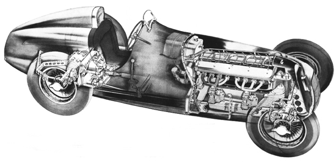
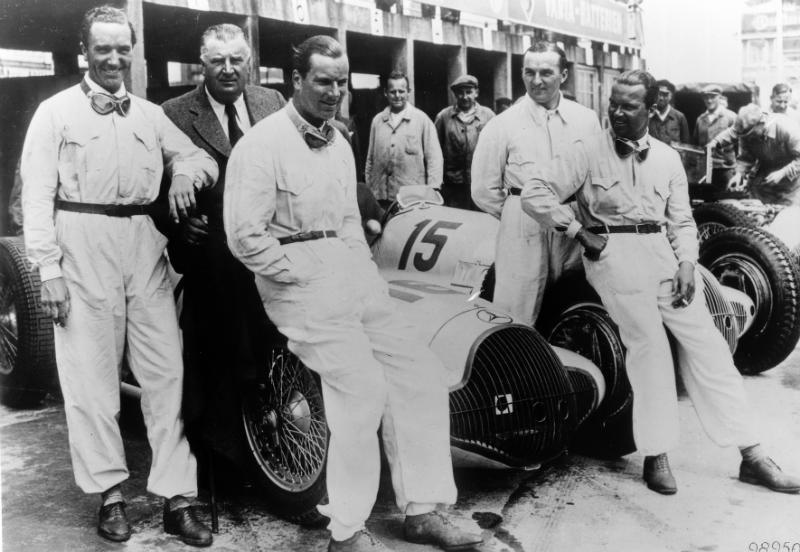

The Mercedes team's first racing car for the new season was the Mercedes W25. The car was powered by a supercharged straight 8 engine producing 354 hp. Starting out the car was succesful but then suffered from mechanical breakdowns. After and embarassing performance the Mercedes team left to design a new car. The new car that was produced was the Mercedes W125. This is possibly Mercedes most succesful car.
This car raced during the 1937 season and the championship went to Mercedes start Driver Rudolf Caracciola. The last car Mercedes designed for the 1938 and 1939 season was the Mercedes W154. The new rules of the 1938 season limited the size of the engine to 3 litres. Mercedes switched from using their straight 8 engines and used a V12 for the new car. The car had two different designs for 1938 and 1938 but underneath everything was identical. The last season was won by Mercedes driver Herman Lang and was the last season for the pre war silver arrows.
